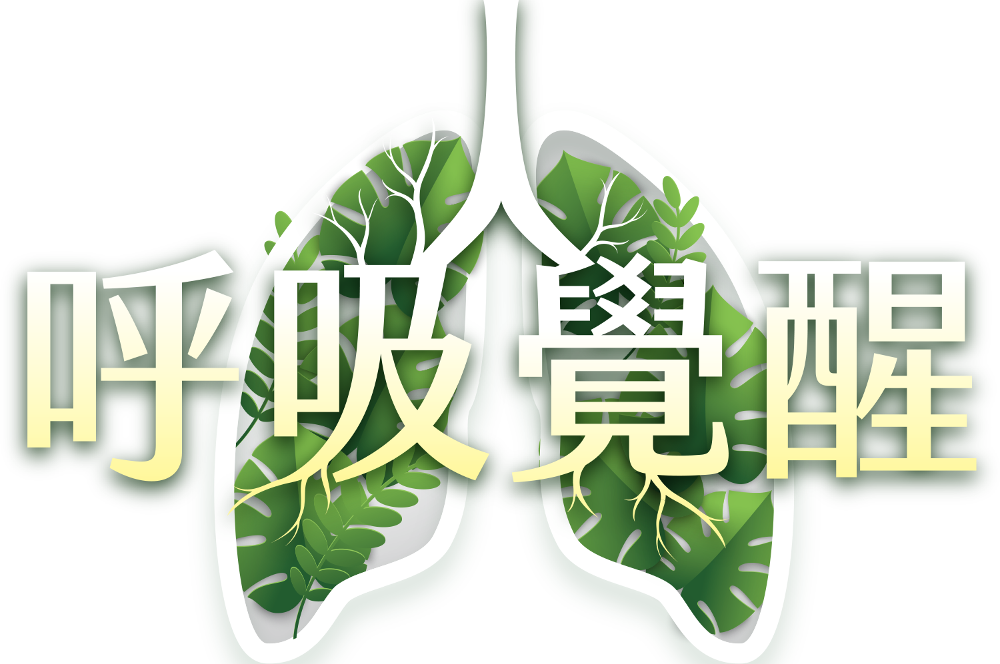
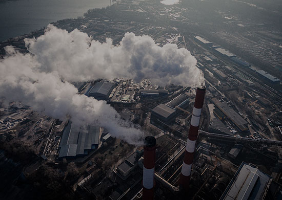
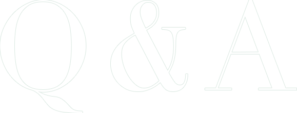
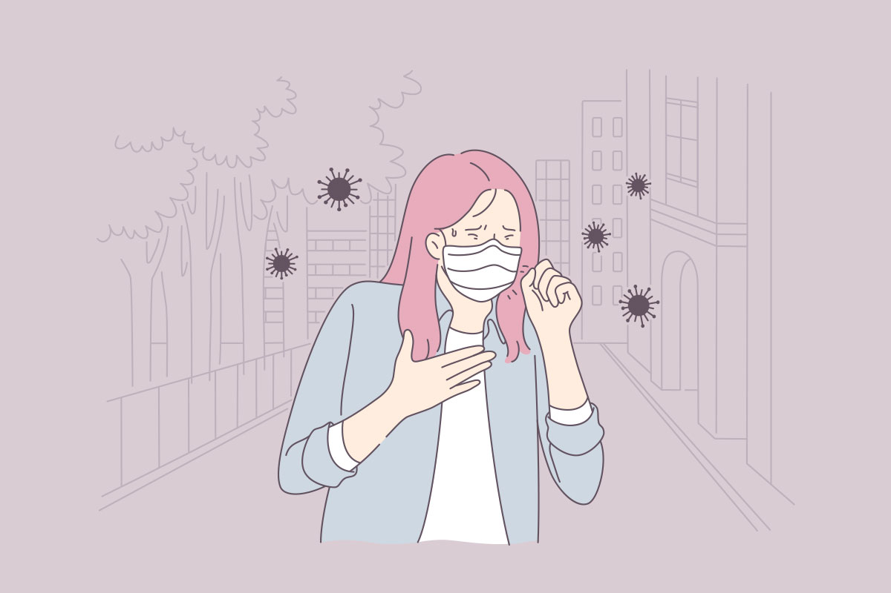
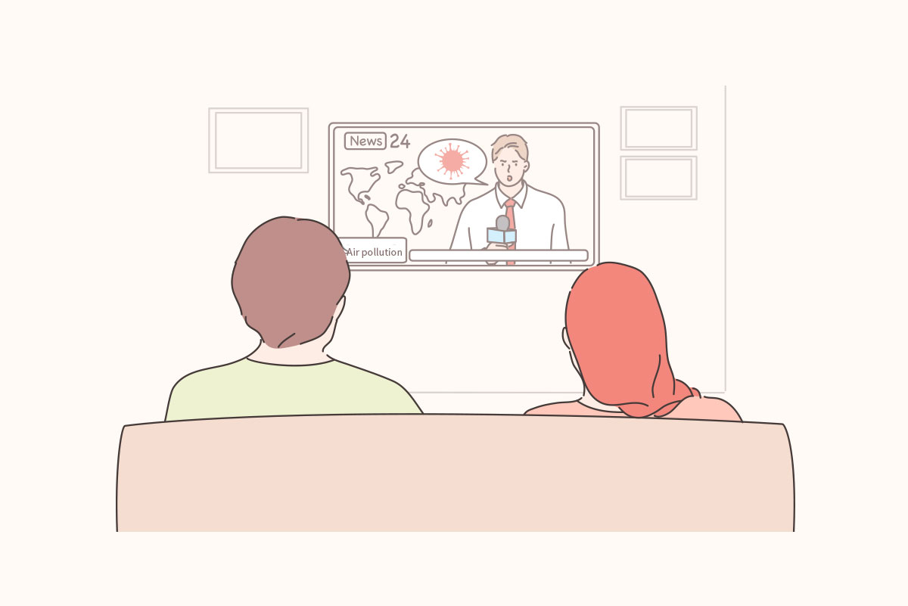
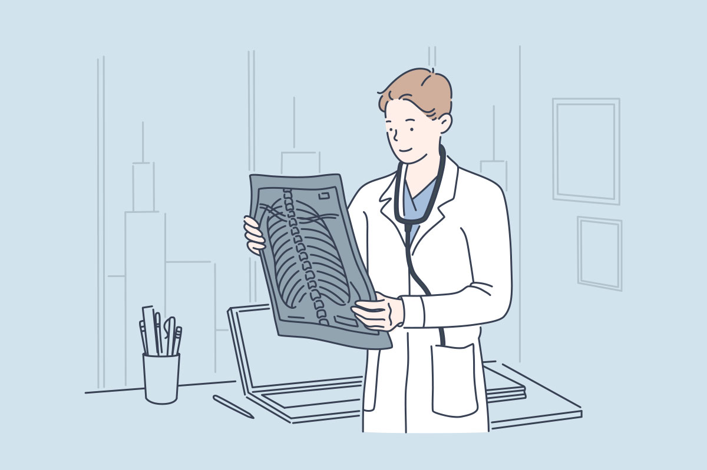
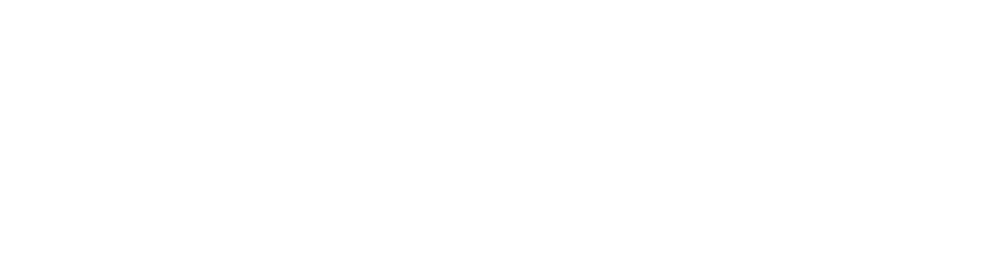

深度閱讀

＃氣候變遷＃空污減碳＃永續健康

為什麼需要呼吸覺醒
你有想過吸進的每一口空氣，會讓你生病嗎？
20年前，康健雜誌在<水與癌症>調查發現，台17線河流下游的濱海路段，竟是一條癌症公路，試圖用議題推動環境改革，呼籲台灣重建基層公衛防疫網。
20年後，康健雜誌在<新國病大調查>觀察全台癌症地圖，剖析肺癌如何成為台灣死亡人數長年穩居第一奪命腫瘤，吸菸率30年降六成，肺癌增加4倍，70％女性肺癌原因不明，發現禍首竟是空氣污染，每個人每一口呼吸裡的髒東西都可能導致癌症的起因…
論壇直擊

醫療變革從每一口呼吸重新審視肺的健康
專家｜台灣胸腔暨重症加護醫學會
保持肺部的健康，並不是不吸菸就足夠！與生活、大自然環境息息相關。
了解肺部如何運作，開始注重肺健康，更為自己定期安排肺功能檢查，守護美好生活。
主題對談
主持人｜康健總主筆 張曉卉
與談人｜陳建仁 院士、彭啟明 總經理、蘇大成 主任、王鶴健 理事長、縣市首長(邀請中)
-
如何從公共衛生的角度來降低肺癌？
-
氣候變遷如何影響台灣的空氣品質及可能的健康危機？
-
面對全球SDGs的要求，如何從｢淨零減碳」與｢永續健康」，幫助企業思考發展新價值？
-
產官學研如何攜手打造更健康的全民呼吸權？
你呼吸對了嗎？

在全球氣候變遷、職業環境及個人警覺性下，空氣中瀰漫著各種隱形危機，導至罹患胸腔與呼吸道相關疾病盛行率不斷提升。你曾想過自己所處的環境中，有多少的致病因子嗎？
根據下面 3 個問題，哪個描述最接近你現在的狀態呢？
-
Q1. 天空「灰濛濛」，總是讓我的呼吸道出現喘、咳等症狀？小知識
當空氣品質變差，會有咳嗽、氣喘或慢性氣管炎等疾病的你，建議減少外出機會，或外出時可依環境配戴醫療用綠色口罩(或N95口罩)、護目鏡及長袖衣物，以隔離髒空氣！
小知識不認同的衛教資訊
-
Q2. 戶外空氣品質差，待在室內安全多了！小知識
你知道在室內也有空氣污染嗎？在潮濕環境使用除濕機，杜絕黴菌孳生；開啟空氣清淨機，過濾髒空氣；選擇效能較好的抽油煙機，減少吸入有害物質的機會，一起打造室內空氣好品質。
小知識不認同的衛教資訊
-
Q3. 我曾經做過肺功能檢查？小知識
您很有健康、保健身體的概念呢！定期追蹤的肺功能外，別忘了留意生活周遭的危險因子喔！
小知識不認同的衛教資訊
-
結束了

空氣品質與氣候變遷為共伴效應，一體兩面
大量排碳就會造成極端氣候，破壞環境，迫害健康，聯合國「2030永續發展目標」（SDGs），其中「健康與福祉」更指出全球應以在2030年前，大幅減少危險化學物質、空氣污染、水污染等，造成的死亡及疾病人數為目標，同時台灣也宣布將在 2050 年達成淨零目標。
台灣慢性病死亡率與
pm2.5濃度地圖
-
芝加哥大學能源政策研究所（EPIC）《空氣質量壽命指數報告》指出，顆粒物空氣污染使全球人類預期壽命平均縮短近2年。
-
空汙嚴重的雲林縣，每年有許多人死於肺癌、中風、缺血性心臟病和慢性肺病，而這些死亡人口中，估計有22%是PM2.5造成的；在花蓮縣，僅有9%的4大慢性病死亡與PM2.5有關。由於全國人口主要居住在空汙較嚴重的西半部，因此平均而言，全國有19%的4大慢性病死亡與PM2.5有關。
-
空氣污染並不是一項「公平」的公害，居住在中南部的人們，所承受的代價遠比北部都會區的人們要高上許多。
-
雲林縣PM2.5年均值高達三十四居冠，嘉義、屏東、高雄甚至離島金門也統統超過WHO標準。在醫師眼中，已經是對所有年齡層的民眾都會產生健康危害的等級。


- 全民永續行動
迎戰奪命空氣 - 氣候變遷
 空污減碳永續健康
空污減碳永續健康
為了守護自己與下一代的健康，
邀您一起為空氣而戰，
把危機變成轉機，呼吸覺醒，就是現在！
專家觀點
俞松良
-
台大醫學檢驗暨生物技術學系/研究所教授
陳玉如
-
中研院化學所特聘研究員
- 前瞻研究
- 從先天族群基因到環境風險，流行病學新思維：台灣癌症登月計畫2.0
簡又新
-
中華民國無任所大使
-
台灣永續能源研究基金會董事長
- 洞見未來
- 因應環境變遷，展望企業永續之路
彭啟明
-
天氣風險公司總經理暨台灣氣候聯盟秘書長
- 監測風險
- 氣候變遷與健康關鍵報告
許超群
-
台灣胸腔暨重症加護醫學會肺部環境及職業醫學委員會召集人
-
高雄醫大附設醫院胸腔內科主任&內科部主任
- 醫療變革
- 從每一口呼吸重新審視肺的健康
蘇大成
-
台大醫院環境暨職業 醫學部主任
- 預防保健
- 企業與個人的綠肺生活指南


- 呼吸覺醒綠肺行動公約
- 守護公民呼吸權
響應淨零減碳，守護環境健康
CHR參與企業簽署承諾，支持綠肺行動
-
我願意，支持政府推動淨零減碳的相關政策。
-
我願意，關心員工健康，加強職場減碳推動或鼓勵員工定期肺功能檢查。
共同響應
- 主辦單位
- 共同推動
- 倡儀夥伴
- 指導單位